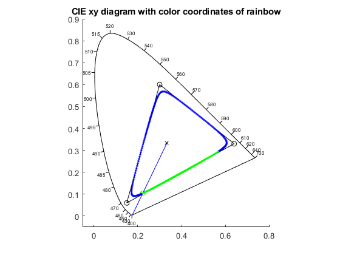
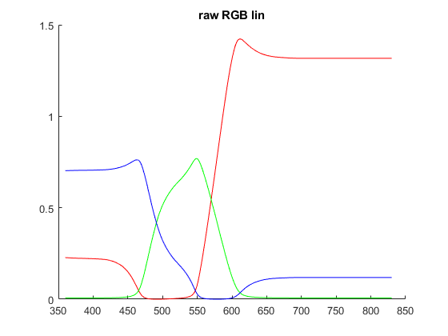
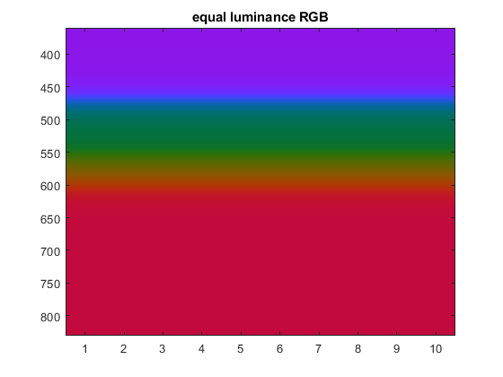
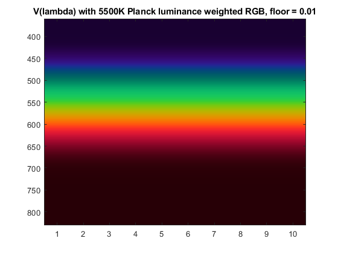
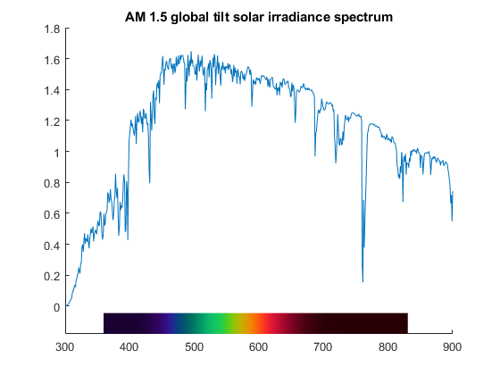
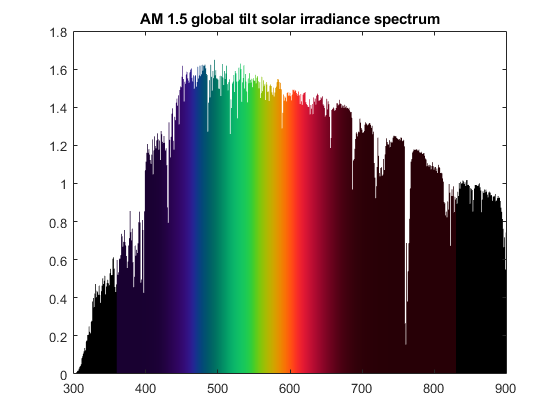
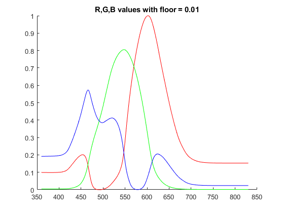
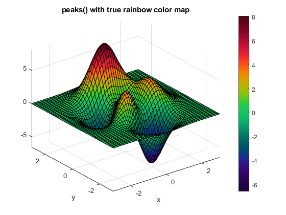

TrueRainbow
Navigate to: Home | Alphabetic list | Grouped list | Source code: XXX.m
Computes an array of RGB values to display monochromatic rainbow colors on an sRGB monitor, as correctly as possible under gamut restrictions
Contents
Syntax
rv = TrueRainbow(opts)
Input Arguments
- opts: Optional Name-Value pairs
| Name | Type | Value | Meaning |
| 'lam' | array of wavelengths | 360:830 (default) | The wavelengths for which the RGB values shall be computed |
| 'showDiagnostics' | logical scalar | false (default) | When true, several informative plots are created |
| 'floor' | real scalar | 0.01 (default) | Lower threshold of linear RGB values to avoid black |
Output Arguments
- rv: struct with fields
lam: A copy of the input array of wavelength (length n).
RGB: A n by 3 array of RGB values between 0 and 1: The corresponding RGB values.
RGBfunc: A function handle with signature rv = RGBfunc(lam); returns an m by 3 array to interpolate RGB values for other wavelengths. Extrapolation beyond the original wavelength array returns black ([0,0,0]).
RainbowImageFunc: A function handle with signature rv = RainbowImageFunc(lam_query, horizontal, n_lines). Input:
lam_query: An array of wavelengths. horizontal: Logical scalar. n_lines: the number of parallel rainbow pixel lines.
floor: Real scalar, copy of input value opts.floor.
Algorithm
Ideally, a rainbow on a sRGB display would look exactly like a real rainbow from sunlight. We want to precisely correlate colors with wavelength, and the apparent brightness distribution of the rainbow. This ideal cannot be reached: The color gamut is not sufficient, and the colors on the display will look less saturated than the real rainbow. Still, it is only saturation, not hue, that should be affected by the display.
We proceed in the following steps:
- We obtain the CIE xy monochromatic border color points as function of wavelengthm in 1 nm intervals from 360 nm to 830 nm.
- We obtain the sRGB color gamut, i.e. the R, G, B primary color points
- We define E = [1/3, 1/3] as the center point for color projection in the CIE xy color space.
- If we would simply project the monochromatic border toward the center E, then we would have visible boundaries in the rainbow at the wavelengths corresponding to the gamut corners. We choose a somewhat smaller projected color locus, with rounded corners, but strictly inside the gamut triangle. We create this by first computing the mid points of the gamut triangle sides, and then defining three weighted, degree 2 Bezier splines (one for each corner), where for each spline we take center point - corner - center point as control points. This resulting triangle is G2 smooth (continuous tangent directions).
- For each point on the monochromatic border, we compute the intersection point with the rounded projection gamut triangle, and obtain its x, y, and z = 1 - x - z color coordinates
- Using the standard sRGB transformation matrix M, we transform [x,y,z] to linear [r,g,b] values.
- Using the standard sRGB primary luminosities, we compute the luminance of each [r,g,b] triplet, and scale them such that they all have same luminance (constant brightness rainbow).
- Two factors govern the actual luminance distribution of a rainbow: (i) the spectral distribution of sunlight, and (ii) the human eye sensitivity. We approximate the sunlight spectrum with a 5500 K blackbody spectrum (the actual solar spectrum doesn't look good here because of narrow absorption lines), and the human eye sensitivity is taken to follow V(lambda). We could now simply scale the equal luminance linear RGB values such that they follow the product of both functions (5500K spectrum times V(lambda)). However, there would be substantial deep red and deep blue tails which would be essentially black. We therefore scale this original weighted luminance L (normalized to peak 1), with a small floor value, such % that the resulting luminance value L' is given by L' = (L + floor) / (1 + floor), mapping the interval [0, 1] to [floor, 1]. This way, the deep red and blue tails remain dark red and dark purple.
- Finally, we apply the sRGB standard gamma function to map linear RGB values to sRGB values. At this stage, we have valid RGB values for the rainbow, from 360 nm to 830 nm, in 1 nm steps.
- The return value is a struct with several fields.
- The field lam is just a copy of the input wavelength array, of length n.
- The field RGB is an array of size n by 3, with linearly interpolated RGB values.
- The field floor is just a copy of the input floor value (default 0.01).
- The field RGBfunc is a function with sigbature rv = RGBfunc(lam) which allows to interpolate the rainbow RGB values to any set of wavelength values.
- The field RainbowImageFunc is also a function, with signature rv = RainbowImageFunc(lam_query, horizontal, n_lines). This function computes an RGB image (a m b< n by 3 array) which is an image of the rainbow. When the boolean flag horizontal is false, then the first dimension corresponds to the wavelengths lam_query. The second dimension contains n_lines copies of the rainbow. The result is a rectangular rainbow image, where the wavelengths vary vertically, blue at the top. When horizontal is true, the first two dimensions are swapped, and the image is a horizonal rainbow.
See also
PlotHorizontalRainbow, PlotRainbowFilledSpectrum
Usage Example
rv = TrueRainbow('lam',400:700,'showDiagnostics',true); rv
z = 3*(1-x).^2.*exp(-(x.^2) - (y+1).^2) ...
- 10*(x/5 - x.^3 - y.^5).*exp(-x.^2-y.^2) ...
- 1/3*exp(-(x+1).^2 - y.^2)
rv =
struct with fields:
lam: [400 401 402 403 404 405 406 407 408 409 410 411 412 … ]
RGB: [301×3 double]
RGBfunc: @(lam)InterpolRainbow(rv.lam,rv.RGB,lam)
RainbowImageFunc: [function_handle]
lam_magenta: [-569.5899 -569.3367 -569.0835 -568.8303 -568.5771 … ]
RGB_magenta: [300×3 double]
RGBfunc_magenta: @(lam)InterpolRainbow(rv.lam_magenta,rv.RGB_magenta,lam)
floor: 0.0100
       